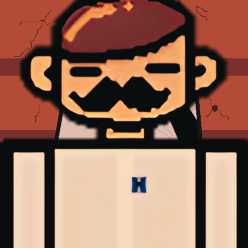

O projeto Mankind é um jogo de gênero RPG 2D, que carrega consigo como principal intuito desenvolver uma critica a sociedade. Basta uma simples observação e perceberemos o quão antiquados e desarmônicos estamos lidando com os elementos ao nosso redor, destacando-se principalmente, a vida. Impactados com tal situação atual, nosso grupo pretende desenvolver uma história que retrate de uma maneira fiel e dinâmica um exemplo de onde a sociedade em que vivemos entrou em conflito consigo mesmo. Com seu desenvolvimento, queremos promover o conhecimento do caso retratado as pessoas e principalmente a reflexão de tudo aquilo que se foi visto e usufruído a partir do jogo.
Nosso principal objetivo é propiciar uma reflexão a sociedade que impacte o modo de ver, de pensar e analisar no que tange ao seu próximo, de maneira lúdica e dinâmica. Queremos sensibilizar a sociedade por meio do nosso projeto e por conseguinte o apelo apresentado, que a partir do que for demonstrado do jogo, que elas possam tirar lições valorosas e possam aplicar elas em suas vidas, saindo de seu estado atual para uma mais promissor no que tange ao tema abordado.
Desenvolvimento
Inicialmente, para o desenvolvimento do jogo, temos como primeiro passo a elaboração de um roteiro. Com a sua produção, todo o projeto irá se guiar por meio dele, seja na questão da arte, programação, música, etc.
O roteiro tem como principal e único cenário o evento histórico chamado de: Guerra de Canudos. A partir dele, se seguirá uma história ficcional inspirada em tal cenário e evento histórico, que conterá conceitos e mecanismos que jogos 2D RPG carregam consigo além de nosso objetivo de reflexão e crítica por meio do projeto.

Com o término do roteiro, avançaremos para nosso segundo ponto de desenvolvimento que seria a parte das artes, bem como os personagens, ambiente, objetos, etc. Para tal seguimento, e para fins de organização e planejamento, destinamos em torno de um mês para a total ou quase total criação de todas as artes necessárias ao projeto, para que pudéssemos prosseguir para a parte da programação. Ao fim da produção das artes, partiremos para a inicialização da programação e suas mecânicas.
Como plataforma, utilizamos o motor gráfico chamado: Godot Engine. Como linguagem de programação, utilizaremos a linguagem nativa da Godot Engine chamada GDScript, que é baseada em Python. Assim como para a criação das artes se foi destinado um mês, para a programação também não foi diferente. Com a finalização da produção da programação, partiremos para nossos últimos dois pontos do projeto, que seria o desenvolvimento do site e a produção da sonoplastia. É de nosso interesse realizar a produção de ambos ao mesmo tempo, para a economia de tempo. No que corresponde a sonoplastia, utilizaremos a plataforma BandLab como principal meio para a composição das músicas. Em relação aos sons, estaremos a efetuar buscas na internet de efeitos de sons que estejam de maneira gratuita distribuída na própria internet. Por fim, a elaboração do site terá como principal intuito a divulgação de nosso projeto.

Objetivo
Nosso principal objetivo é propiciar uma reflexão a sociedade que impacte o modo de ver, de pensar e analisar no que tange ao seu próximo, de maneira lúdica e dinâmica. Queremos sensibilizar a sociedade por meio do nosso projeto e por conseguinte o apelo apresentado, que a partir do que for demonstrado do jogo, que elas possam tirar lições valorosas e possam aplicar elas em suas vidas, saindo de seu estado atual para uma mais promissor no que tange ao tema abordado.
Nossa principal referência se baseia em frase formulada e expressada pelo educador e filósofo brasileiro chamado: Paulo Freire. A frase em que nós nos inspiramos, diz que: “Quando a educação não é libertadora, o sonho do oprimido é ser o opressor”. Esta frase do Paulo Freire retrata justamente este nosso objetivo, de retratar essa questão do oprimido e o opressor. Além desta frase, nos aspiramos em elementos de jogos do mesmo estilo que aderimos em nosso projeto. Como principal exemplo de jogo em que nos inspiramos, temos o Undertale, tendo como principais elementos tomados como base: Arte Visual (personagens, cenário, interface, etc.), mecânicas, enredo, forma de composição das músicas, etc.
Jogar o Game
Nosso game foi hospedado em uma plataforma web chamada itch.io, um site para usuários hospedarem, venderem e baixarem jogos eletrônicos.
O projeto pode ser acessado e jogado pelo navegador sem nenhum tipo de download.